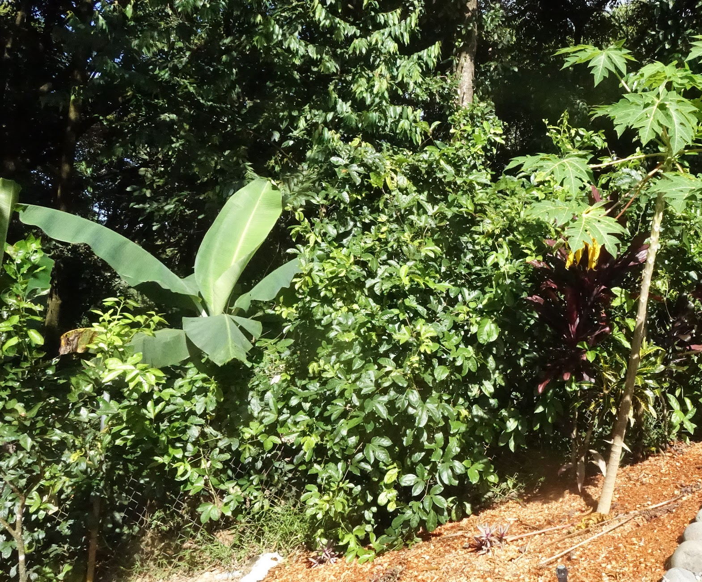
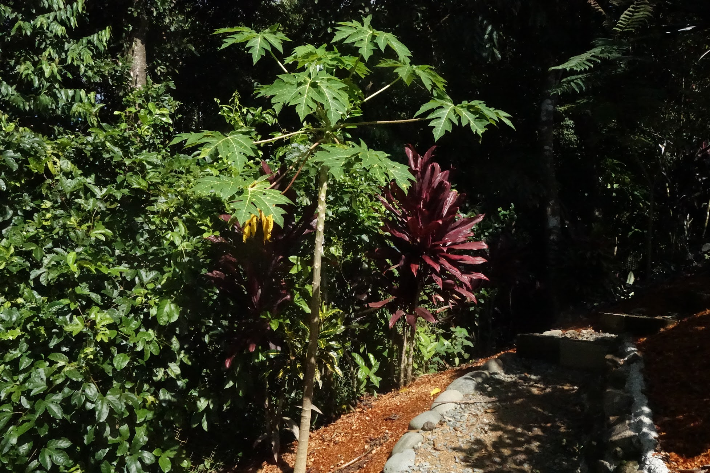
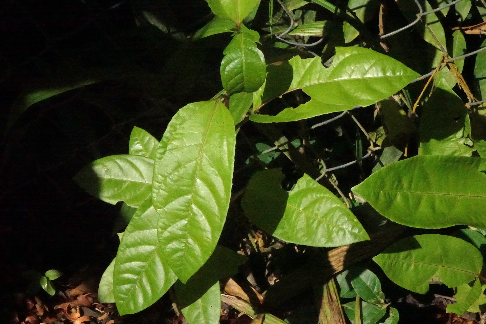
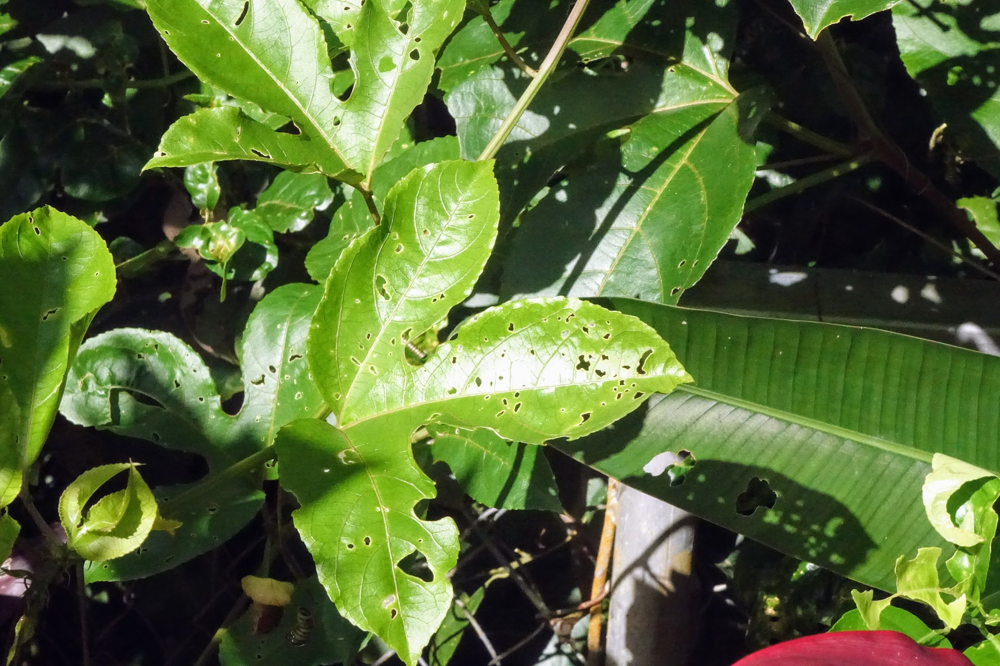
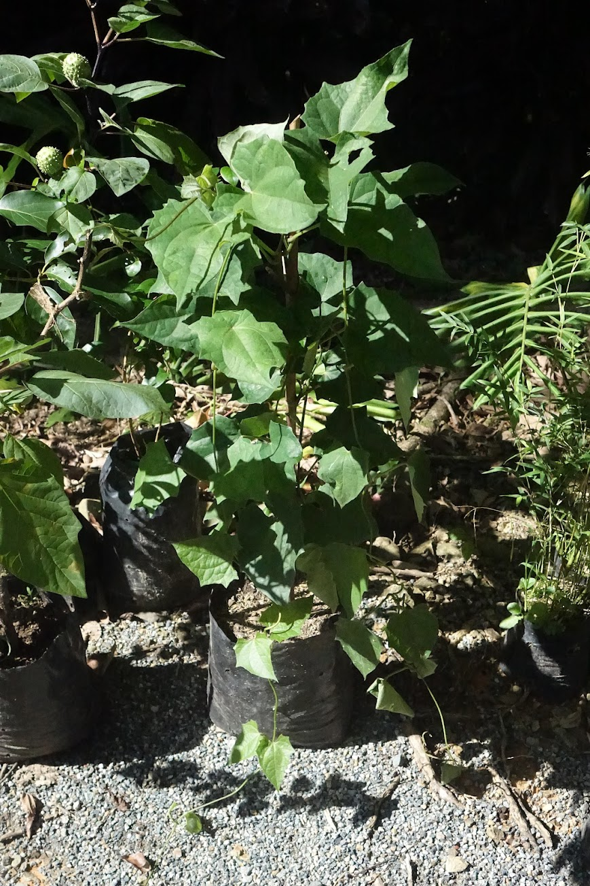
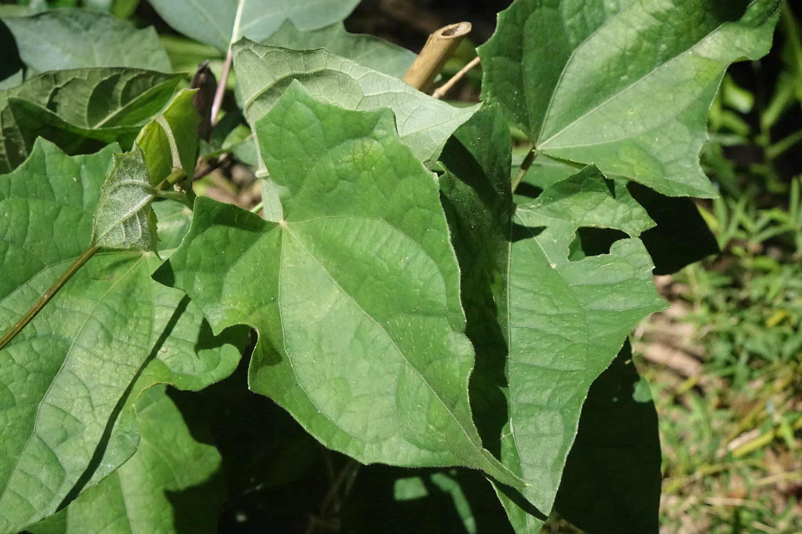

26. December 2021
Maracuya

Maracuya (Passion Fruit)
Passiflora edulis, Passiflora edulis var. flavicarpa Sims.
Passion Fruit is one of 550 species of the genus Passiflora. In Spanish, it’s referred to as maracuya, which can refer to either the yellow (flavicarpa) or purple varieties (the Blanke book refers to the purple as maracuya, but here on the pacific coast the yellow variety is much more available and is given the same name.) Commonly available from farmers markets and fruiterias in Costa Rica, it’s a oval fruit, typically around the size of an apple. It has a firm outer shell containing a pulpy/juicy mass fruit and seeds inside. Typically we will cut it in half, scoop out the insides and use them in smoothies, although it’s also delicious over yogurt.
Growing Passion Fruit
Passiflora grows as a vine. It’s easy to germinate from seeds scooped from the fruit. It can be easily trained to cover a fence, and in the past I have trained one to fill in a vertical void between patio and balcony using strings suspended from the balcony. Mature stalks become somewhat woody, but won’t stand upright unless their tips have a firm grasp of something. Given the opportunity it will spread into nearby bushes or trees, but as far as I know won’t self root, so can be controlled with strategic pruning. Reputedly a single mature vine can spread 30-50 feet in all directions in good conditions.
We have three varieties of Passiflora growing, which I’ll post more pictures of as they develop. Young vines (perhaps less than a meter or so in length) have simple oblong to elliptical leaves, but as the vine gets going leaves develop into a distinctive 3 lobed shape.
Yellow Passion Fruit - Growing on a fence

This is a Yellow Passion Fruit vine, germinated from seed scooped out from a farmer’s market fruit, and planted against a 4' high chainlink fence at around 6 weeks. At the time of these pictures the vine is around 10 months old, and has started to flower but has not yet fruited. I am letting it spread into some junk citrus bushes behind the fence. The banana is behind the fence - you can see the vine does a good job of filling in. I haven’t done much training here, so with a little guidance it would be more consistent.

Same plant from a different angle, filling in behind a papaya in the foreground. The vine has attempted to make the leap to the papaya a few times, but I tend to either cut the tendrils that do, or pull them back over the fence.

This is a young leaf, showing a simple oblong shape.

This a leaf on an older vine. I believe leaf shape is more to do the age of the plant than the age of the leaf, but I will update this if I notice differently.
Passiflora Monte
This is a vine bought from a nursery, labeled Passiflora Monte. Googling for more information, it may be Passiflora serratifolia, an ornamental. Time will tell.


More updates to come as we get fruit.